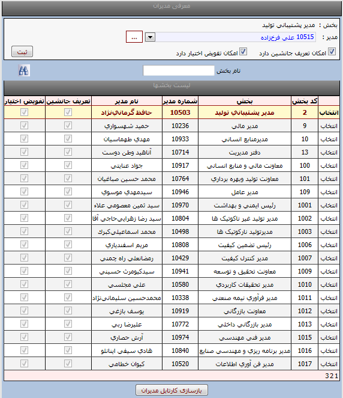

معرفی مدیران بخشها
مدیر: مدیر
یک بخش فردی است که درخواستهای پرسنل آن بخش برای تائید به کارتابل وی می رود وچنانچه وی
مجوز راتائید نماید آن مجوز دربرنامه
pwkara
اعمال می
شود.
ابتدا بخش مورد نظر را انتخاب نمایید سپس از منوی مدیر نام مدیر را انتخاب نمایید ودر صورتیکه این مدیر امکان انتخاب فردی به جای جانشین خود دارد گزینه جانشین را تیک بزنیدودر صورتیکه این مدیر بخواهد فرد دیگری را به جای خودش به عنوان تفویض اختیار انتخاب نماید گزینه تفویض اختیار را تیک می زنید.

بازسازی کارتابل : زمانی مدیر تغییر پیدا می کند و به درخواستهایش رسیدگی نکرده باشد ، درخواستها به کارتابل مدیر جدید ارسال میشود.